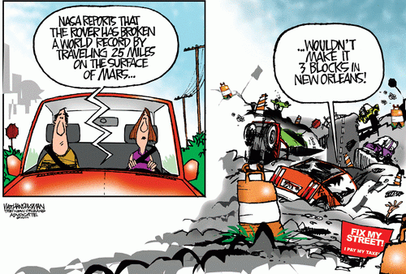

A friend from Santa Barbara sent me this cartoon, with the question, “Is it really this bad?” (Thanks, Karl!)

(Cartoon from the New Orleans Advocate.)
It’s bad.
Katrina accelerated the deterioration already underway before the storm. The city already had hundred year old water mains and sewers in a bad state. It’s a fine old tradition here that things that are not visible do not receive attention.
So here’s the problem: New Orleans is doing the obvious: locally fixing underground water mains as they break, at great expense, only to the have the same main fail one block over next month… and repeat forever.
Or the city could rip out and replace the whole marginal and failing water main for the whole damned street. The problem with this, the better solution, is that it takes money.
Now multiply this by the hundreds of streets that have problems.
The bad water mains and bad sewers make bad streets with potholes that would be in the Guinness Book of Records, if there was such a category. New Orleans serves as a kind of a microcosm for what’s happening with failing infra-structure all over the United States.
On the bright side, I tell my friends in Santa Barbara that their town is wasting money on building glass-smooth streets that encourage people to drive too fast, so that they they have to spend even more money on installing speed bumps. In New Orleans speed bumps are unnecessary: Want to slow down traffic? Just let the pot holes remain.